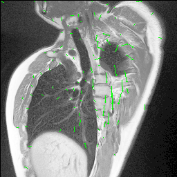
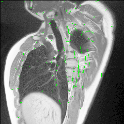

~~~ Current Projects ~~~
Thinkpad
My friend gifted me an empty ThinkPad to play around with. I wanted a computer with Linux installed, so I decided to set up
Linux on there. The ThinkPad did not have an internal hard-drive, so here is what I did to install it:
Equipment:
- SSD Hard drive
- SATA to USB cable
Plan:
- Download Linux ubuntu from personal computer onto new SSD.
Downloaded Ubuntu from here.
Step-by-step process:
First, confirm that what you downloaded is the Ubuntu ISO file (it should end in .iso)
Ensure that the SSD is formatted properly:
- Open Disk Utility on your Mac
- Select the SSD from the left sidebar
- Click "Erase"
- Choose "MS-DOS (FAT)" or "ExFAT" as the format
- Choose "GUID Partition Map" as the scheme
- Give it a name and click "Erase"
- Open Terminal
- Type diskutil list to identify your SSD's identifier (it will be something like /dev/disk2)
- Unmount the SSD with: diskutil unmountDisk /dev/diskN (replace N with your disk number)
- Use dd to write the ISO: sudo dd if=/path/to/ubuntu.iso of=/dev/rdiskN bs=1m
- (replace /path/to/ubuntu.iso with the actual path to your ISO file, and N with your disk number)
- Enter your password when prompted
- Wait for the process to complete (it might take a while and won't show progress)
Resources:
- Levovo: Installing an SSD
- ThinkPad general (4chan)
Music
Artists:
- fennesz
- William basinski
- ryuichi sakamoto
Software:
- max msp
- ppooll : a digital signal processing (DSP) environment for Max/MSP.
- tracker program such as renoise or schism
Schism Tracker Resources:
- Official Documentation
- Distance / Lackluster - Thor's Magic Bathtub
Sunvox Resources:
- polyend tracker + sunvox - "solar realms" - ambient idm project files
- ableton
Hardware/Samplers:
- Roland SP-404MKII Sampler and Effector
Edu:
- BoBeats